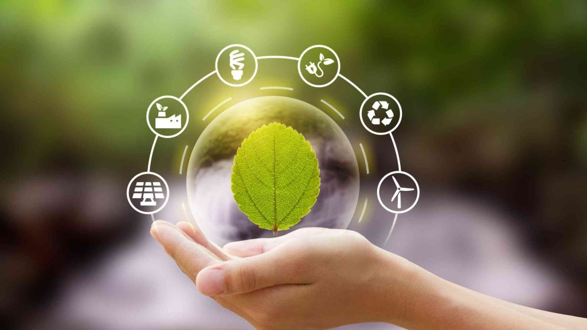
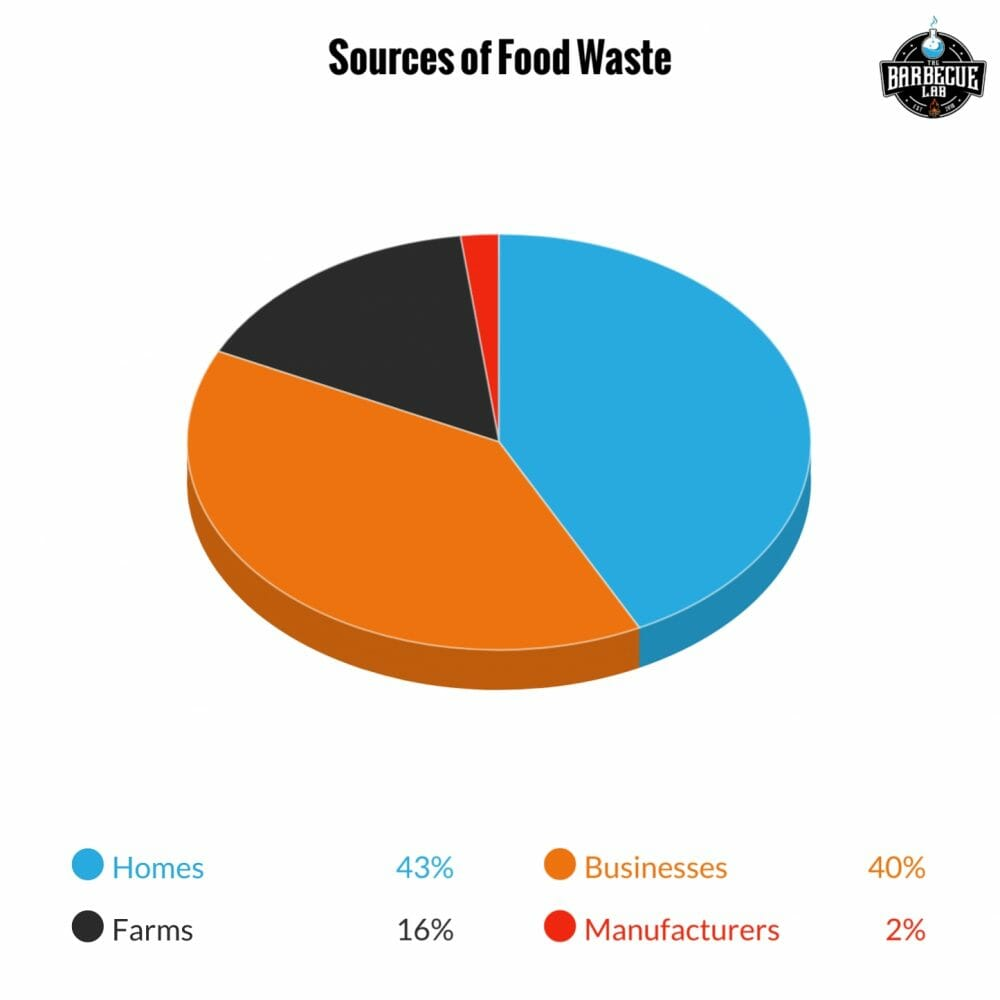
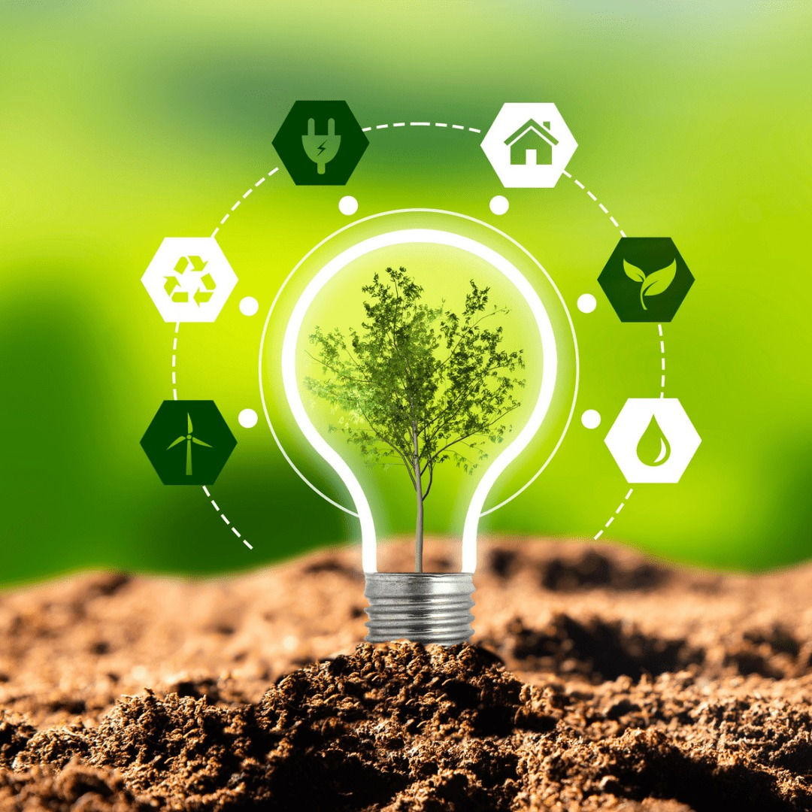

EcoChoice
Responsible Consumption & Production
Responsible Consumption & Production

Sustainable Development Goal 12 (SDG 12) aims to ensure sustainable consumption and production patterns. It recognizes that current consumption and production patterns are unsustainable and are causing severe environmental degradation. SDG 12 calls for doing more and better with less, decoupling economic growth from environmental degradation, increasing resource efficiency, and promoting sustainable lifestyles.
The way we produce and consume goods and services is putting enormous pressure on the planet. If the global population reaches 9.6 billion by 2050, we will need the equivalent of almost three planets to sustain current lifestyles. SDG 12 addresses this challenge by promoting:
Implementing SDG 12 helps achieve overall development plans, reduces future economic, environmental and social costs, strengthens economic competitiveness, and reduces poverty.
tons of food wasted annually (about 1/3 of all food produced)
of global energy consumption comes from renewable sources
of the world's 250 largest companies report on sustainability
of wastewater flows back into ecosystems without treatment

Material consumption of natural resources is increasing, particularly in Eastern Asia. Countries continue to face challenges with air, water and soil pollution. Key issues include:
SDG 12 has 11 targets that provide a framework for action. Here are the key targets:
Implement the 10-Year Framework of Programmes on Sustainable Consumption and Production Patterns, all countries taking action, with developed countries taking the lead
Achieve sustainable management and efficient use of natural resources by 2030
Halve per capita global food waste at retail and consumer levels and reduce food losses along production and supply chains by 2030
Achieve environmentally sound management of chemicals and all wastes throughout their life cycle by 2020, and significantly reduce their release to air, water and soil
Substantially reduce waste generation through prevention, reduction, recycling and reuse by 2030
Encourage companies, especially large and transnational companies, to adopt sustainable practices and to integrate sustainability information into their reporting cycle

Explore these resources to learn more about responsible consumption and production: